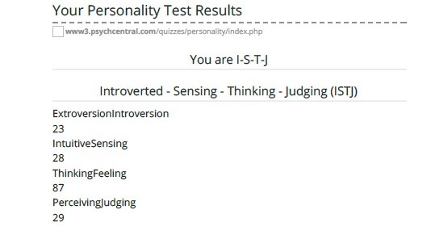
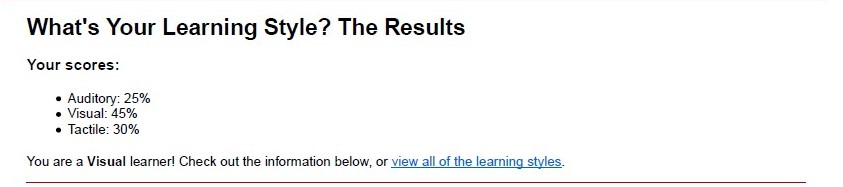
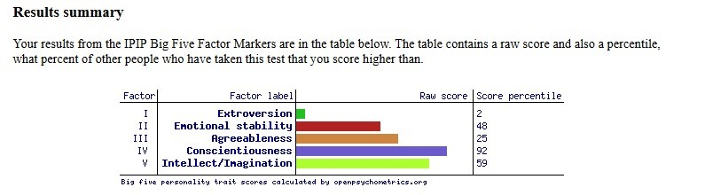
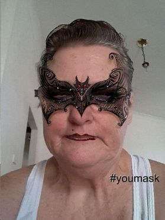
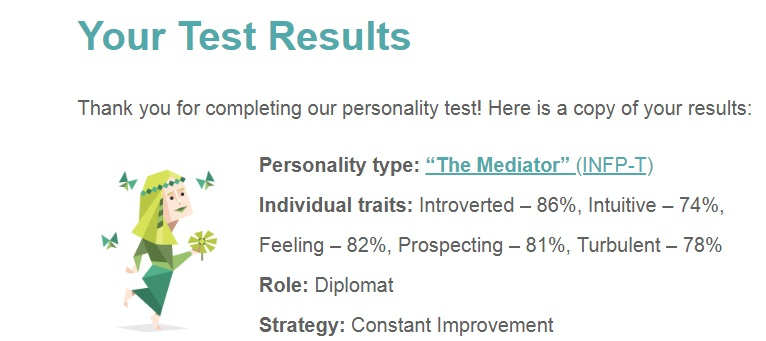
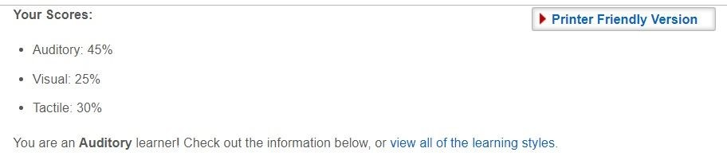
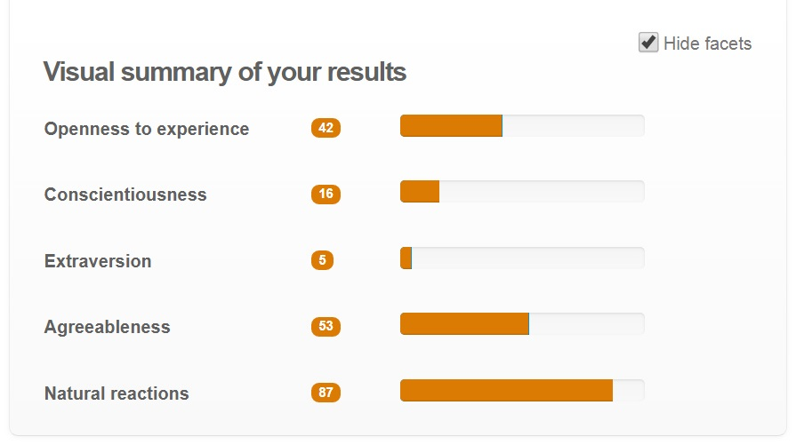

NativeDevs
COSC2196: Introduction to Information Technology
Assignment 2
Below is the profiles of each member for our team, NativeDevs.
| Name | Student Number | Active | |
|---|---|---|---|
| Lindesay Ackland | s3776584 | s3776584@student.rmit.edu.au | No |
| Sean Betts | s3794440 | s3794440@student.rmit.edu.au | Yes |
| Lillian Cobbs | s3755138 | s3755138@student.rmit.edu.au | Yes |
| Katherine Hallam | s3775575 | s3775575@student.rmit.edu.au | Yes |
| Jacob Moors | s3607359 | s3607359@student.rmit.edu.au | No |
| Joshua Townsend | s3708682 | s3708682@student.rmit.edu.au | No |
Lindesay Ackland
N/A

Sean Betts
My name is Sean Betts, I live in Queensland, and am looking to find work developing software. I have a Bachelor of Engineering Degree, majoring in Computer and Software Systems.
I am interested in all kinds of software, from robotics to web application development. My hobbies include playing tennis, and reading web novels.
My full profile can be found at here.



My test outcomes indicate that I have an ISTJ personality which indicates that I am introverted and struggle with social interactions. I also learn through visual stimulus and by performing tasks. My learning style will be useful in the team, as it will help with the research that needs to be performed, as well as understanding the written communication that is sent between our members. My personality type indicates that I am likely to help my team members throughout the project. Which will mean that I can support my team members when they are struggling to complete tasks.

Personality Test Results
Myers-Briggs Test
Learning Style Test
Big Five Personality Test
Impact on the Group
Lillian Cobbs

I am from Geraldton W.A. My full profile can be found at here.
I came to RMIT to study java code.
but now I am also studying IT Programming with the
hope of getting some part time work from home once I finish my studies.
Before I came to Geraldton I lived south of Perth W.A
Where I study at T.A.F.E and completed 4 courses.
Katherine Hallam
I am originally from the UK, but immigrated to Perth, Western Australia with my family when I was only five years old. My educational background includes gaining a diploma in Beauty Therapy as well as a Diploma in Children’s Education; I have also completed a number of Certificate Three’s in various other subjects. My main spoken language is English, although she does know how to speak very basic Italian. My hobbies include horse riding, writing poetry and taking my Miniature Schnauzer for a walk. My interest in IT includes web design, although I also have an interest in game development and design. My interest in IT stemmed from my fascination with a ‘Speak and Spell’ toy that I received for Christmas one year as well as working with my late father in the desktop publishing industry. My experience in the IT industry includes some basic HTML knowledge and some knowledge of desktop publishing software. My full profile can be found at here.



The test outcomes for all three of the tests (Myers-Briggs personality test, learning style test and big five personality test) indicates I have an introverted personality, and tend to be quite disorganised and seem to rely on creativity and imagination rather than facts and logic to complete tasks and projects. I am an auditory learner which means that I learn by hearing and listening.
This information may be helpful to the group as it will let them know what my working habits may be and therefore some strategies could be put into place to keep me focused on the tasks at hand. Some of these strategies may include creating a task list and having group discussions via face to face chat.

Personality Test Results
Myers-Briggs Test
Learning Style Test
Big Five Personality Test
Impact on the Group
Jacob Moors
 N/A
N/A
Joshua Townsend
 N/A
N/A
Ideal Job Comparison
Katherine's Ideal Job: Project Manager
Sean's Ideal Job: Integration Software Engineer
Lillian's Idea Job: Graduate/Junior Java Developer
The common elements between Sean’s job and Katherine’s are that they must have a relevant qualification or background in software engineering and good communication skills. The things that differentiate Katherine’s ideal job from Sean’s are that Sean’s ideal job revolves around developing software for the robotics industry while Katherine’s ideal job revolves around creating content and software for video/MMO and free to play games. Sean’s career differentiates from Katherine’s in that he already has some of the qualifications and skills needed for his ideal job, whereas Katherine does not have any of the needed qualifications or skills needed for her ideal job.